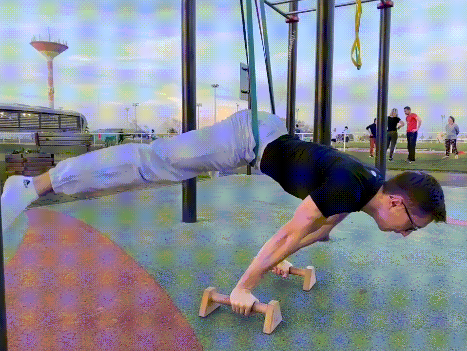
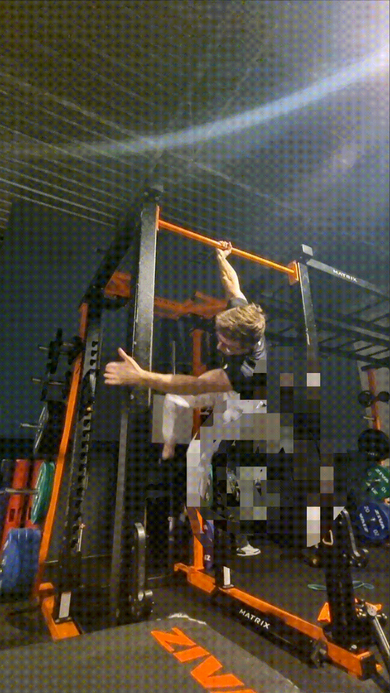
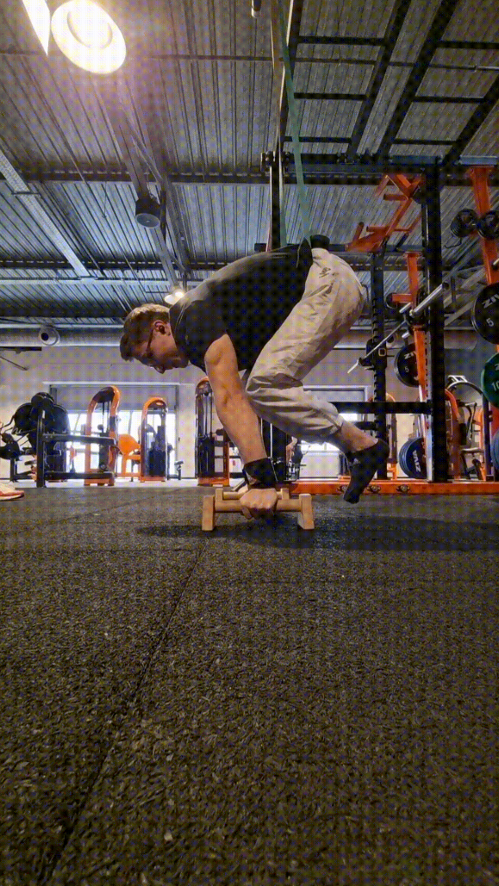
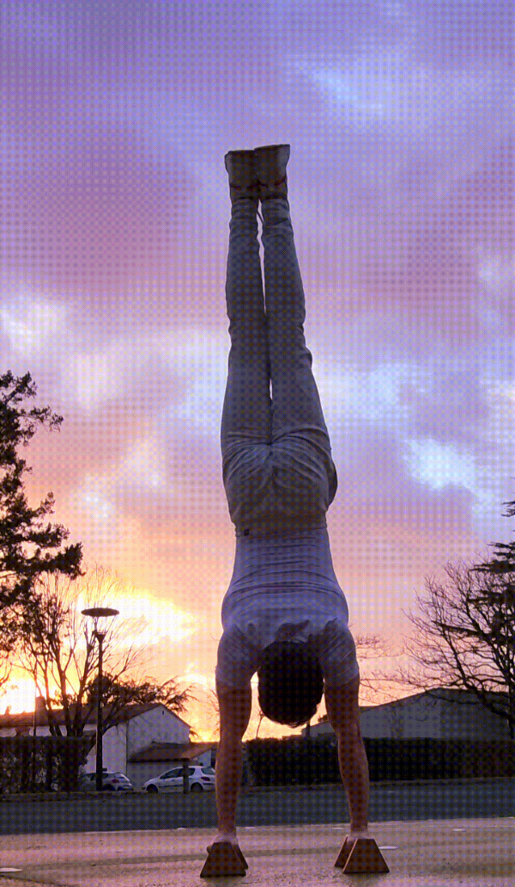
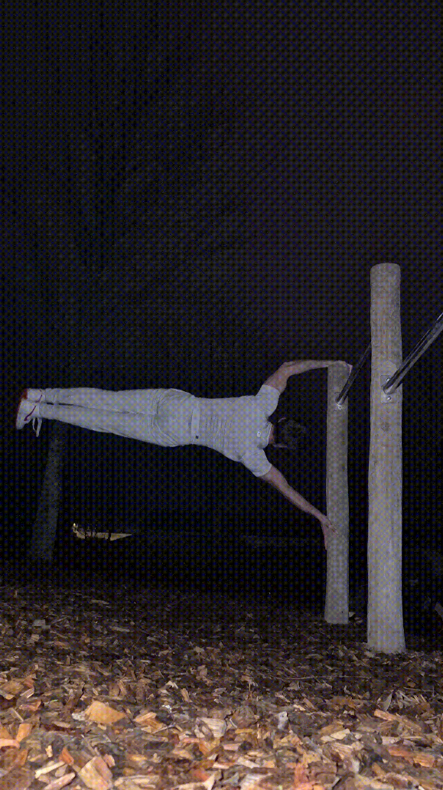

Développement Java - Minecraft
Depuis petit, j'ai toujours aimé le jeu vidéo Minecraft, un monde où je
suis libre d'imaginer ce que je veux. Depuis que j'ai
intégré le BUT informatique de Clermont-Ferrand, j'ai voulu pousser les
limites de ce jeu encore plus loin...
Alors, j'ai commencé par apprendre le Java en
autodidacte. En effet, lors de ma première année en BUT, le
Java n'était pas enseigné. J'ai donc décidé de regarder des vidéos sur
YouTube, pour comprendre comment le langage fonctionnait. Bien
évidemment, en autodidacte, j'ai rencontré beaucoup de problèmes :
Syntaxe, conventions ,
indentations et j'en passe...
Même si cet apprentissage a pris beaucoup de temps en dehors de mon
cursus scolaire, je n'ai pas voulu abandonner mon jeu préféré et j'ai
poursuivi ce rythme soutenu. Après plusieurs mois
d'entrainement seul, j'ai décidé de partager mes connaissances avec mes
amis et ainsi ouvrir un petit serveur pour pouvoir jouer
ensemble. Bien sûr, j'ai changé le fonctionnement de Minecraft en créant
des plugins. Je n'ai eu que des
retours positifs sur cette expérience.
Au final, apprendre un langage en autodidacte n'est pas facile du tout.
Il faut savoir s'organiser du mieux possible et être très
curieux. Toutefois, j'en garde de très bon souvenirs
lorsque je codais. Oui, Minecraft est un peu cliché pour un
développeur, mais c'est ce qui m'a fait vibrer :)
Mon sport, la callisthénie
Depuis mes 18 ans,
je n'ai jamais ou très peu fait de sport (1 mois de
football pour faire plaisir à ma maman). Le cas classique de
l'informaticien : celui qui reste bloqué sur sa chaise à jouer aux jeux
vidéo ou à coder. Je n'ai jamais eu réellement besoin de beaucoup
travailler à l'école pour obtenir ce que je voulais, mes parents me
considéraient comme une sorte de petit génie. C'était mon
parcours, jusqu'à ce que je commence mes études
supérieures.
Le fait de devoir me séparer de ma famille, à plus de 300
kilomètres, et de ne plus les revoir pendant longtemps m'a un peu
changé. De plus, étant de nature très anxieux, je cherche à
anticiper toutes mes tâches. Ma première année à l'IUT n'était pas
vraiment une partie de plaisir. Je ne suis
jamais content de ce que je réalise, je veux
toujours faire plus, et
plus rapidement que les autres. Par contre, je n'hésite pas
à partager ce que j'ai à mes camarades, ou bien à faire un travail
collectif en avance pour aider mon groupe, je pense que j'ai du mal à
dire non parfois, je suis trop gentil.

Et donc, forcément, j'ai eu quelques périodes compliquées,
et c'est là que ma vision a changé du jour au lendemain. Un jour, un
ancien ami m'a proposé de faire une séance de sport dehors
pour s'aérer l'esprit pendant nos révisions. Bizarrement,
j'ai directement accepté. Il m'a ensuite montré un parc pour
s'entrainer. J'y suis retourné seul quelques jours après et j'ai vu
quelqu'un faire un équilibre, j'ai été impressionné et j'ai
directement compris que c'était ce que je voulais faire.
Donc depuis Janvier 2023, petit à petit je faisais 1 ou 2
séances dans la semaine. Puis je suis passé à 3 séances, 4 séances
etc...

Alors forcément, ce sport est très technique et très
physique. J'ai échoué BEAUCOUP de fois mais
j'aimais enfin faire du sport. J'ai commencé par des simples
pompes, des tractions et des
dips. Ensuite, j'ai commencé à parler avec les autres. Ils
étaient tous bienveillant et ils corrigeaient mes erreurs et me
donnaient des conseils pour progresser plus vite. Par la suite, j'ai
ramené des personnes de mon école pour faire découvrir ma passion aux
autres. Certains ont adoré, d'autres ont
abandonné.
Bref, après 2 ans de pratique, je suis très fier d'avoir
découvert ce sport. Je m'investis peut-être beaucoup trop
dans ce sport et le fait de devoir
équilibrer les études et le sport est assez compliqué. En
moyenne, je fais environ 18 heures de sport soit environ 5
à 6 séances par semaine. Le sport m'a fait grandir, il
m'apprend à m'organiser, à relativiser, à me
libérer et à me démarquer. Je souhaite faire
des compétitions dans quelques années, et je tiens ma parole.
Au final, mon cas est assez rare. Un informaticien et le
sport ça ne va pas ensemble normalement. Tout
le monde me dit que j'ai la morphologie pour ce sport, certains pensent
même que je mens sur mon âge, sur mon histoire ou même que je me pique.
Je sais ce que je vaux, j'ai fait de merveilleuses
rencontres. Bref, je ne regrette pas mon choix !




